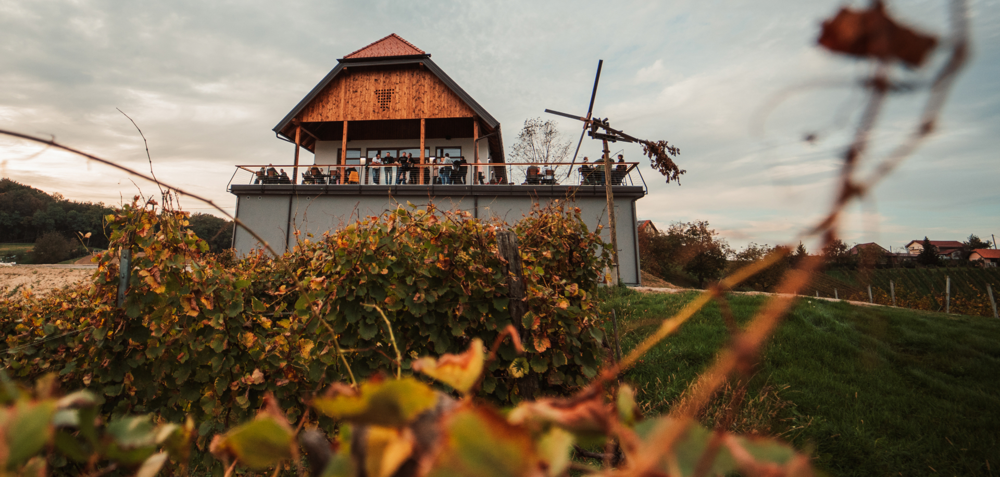

Pričetek
Priimek MAK se omenja v arhivih že več kot 500 let. Naši predniki so bili kmetje, prve trte pa so bile na naši kmetiji zasajene pred 80 leti in tako je vinogradništo tradicija na naši kmetiji še danes. Pred dobrimi 40 leti pa je oče Vlado zasadil sorto rumeni muškat, ki je še danes naša najbolj priznana sorta.